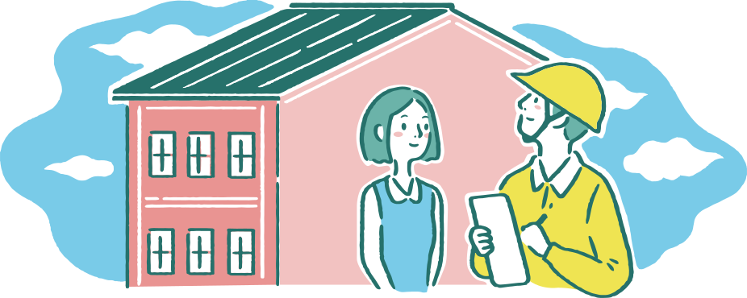
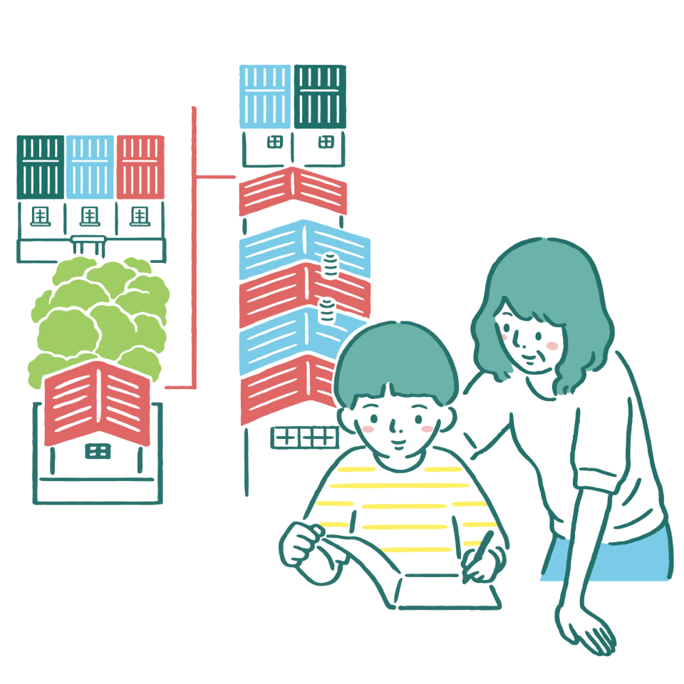
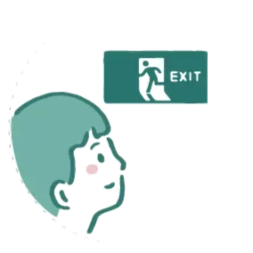
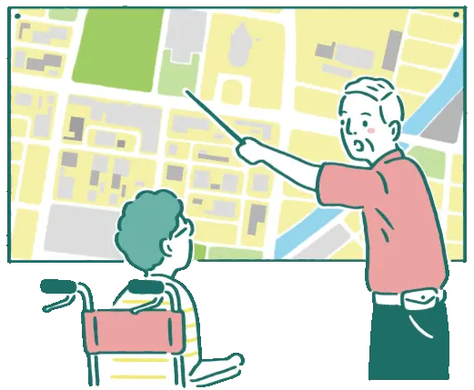
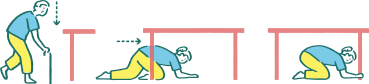
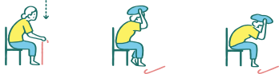

1
在生活中每一個重要場所，包含住家、工作地點、學校等找尋信任的親友，或是詢問村里長，社區是否有防災志工，在緊急時可以來幫助您。
2
找一位離您比較遠(如不同村里)的緊急聯絡人，避免鄰近的緊急聯絡人遭受同樣災害而無法前來幫助您。
3
將您家裡的備份鑰匙交給其中一位緊急聯絡人。


在生活中每一個重要場所，包含住家、工作地點、學校等找尋信任的親友，或是詢問村里長，社區是否有防災志工，在緊急時可以來幫助您。
找一位離您比較遠(如不同村里)的緊急聯絡人，避免鄰近的緊急聯絡人遭受同樣災害而無法前來幫助您。
將您家裡的備份鑰匙交給其中一位緊急聯絡人。
將您家裡的備份鑰匙交給其中一位緊急聯絡人。
若您需要依靠生命維持設備或是仰賴照顧服務員，請您的緊急聯絡人在緊急時，務必主動確認您的狀況。
準備３天份的物資。
物資儲備項目因人而異，按照您的生活模式，思考少了哪些東西會讓生活陷入困境，那些東西就是您應該儲備的內容。
可以依據您的日常生活必需品多採購一點數量，其中食物盡量選擇不需加熱煮食或用冰箱保存的類型，如罐頭、乾糧。
除了平常使用，放有現金、行動電源、重要證件(健保卡、身分證、身心障礙證明)、濕紙巾等衛生用品的隨身包包外，請再準備一個緊急避難包並放在容易取得的地方。緊急避難包內容物以維生必需品為主，控制在自己可以帶走的重量與大小，並半年檢查更新一次物品，建議物品：
如果您的輪椅有座墊，當必須在沒有輪椅的情況下撤離，請隨身攜帶座墊。
在拐杖、輪椅、助行器上貼發光貼紙，以便在黑暗中仍可以找到它們。

若您需要仰賴生命維持設備，請做好停電的備援規劃。
若您有使用呼吸器，可將呼吸卡影本放在緊急避難包中，以便需要使用其他呼吸器時，可立即調整到適合自己的模式。
有慢性病的人備妥處方箋影本、確認平時就診醫療機關的聯絡方式和常用藥物，並確認使用期限。


1999年(含)以前取得建造執照的房屋(或是考量施工期程，2002年(含)以前完工的建物)，會有較高的地震風險，若經濟許可，建議與全棟建築物所有權人共同找結構技師進行耐震評估。耐震評估補助資訊可查詢內政部營建署「老屋耐震安檢」相關內容。
請到國家災害防救科技中心「災害潛勢地圖網站」查看所在地是否有災害潛勢。
多數縣市會在颱風或豪雨災害之前，主動聯繫保全住戶，可向地方政府確認自己是否在災害保全戶名單內。
另外，可到 「街屋耐震資訊網」評估你家是否耐震。
規劃安全的疏散撤離路線與交通方式，由於災害時可能會遇到石塊、樹木倒塌等導致道路無法通行的狀況，建議多考慮幾條避難路線，並實際模擬疏散撤離以確認可行性。
 如果您可能去的收容處所是醫院或其他禁帶寵物的地方，請事先安排寵物可能的去處。
事先確認避難收容場所的環境是否適合自己，例如：觀察無障礙廁所環境是否適合您？是否有洗澡椅？收容所可否提供輪椅或維生器材充電需求？是否有冰箱可以保存藥物？
檢查或補修屋頂及牆壁。
利用浴缸或是水桶儲水。
清理住家附近的排水溝，確保暢通、沒有阻塞。
將庭院、陽台的樹木以支柱固定或將盆栽搬進家中。
玻璃可以貼上膠帶、防碎膜，並拉上窗簾。
窗戶玻璃可以貼上防碎膜或拉上窗簾，避免玻璃四濺。
以L型角鐵將傢俱固定於牆面。
讓櫥櫃門或抽屜的方向與床平行，即使東西傾覆也不會掉落到床上。
若將輪椅、助行器等輔具放於床邊時，記得固定輪子或做相關固定措施。


身體尚可趴下者：趴下、掩護、穩住。
無法趴下者：坐下、掩護、穩住。
使用輪椅者：固定、掩護、穩住。
使用輪椅者務必要鎖住或固定輪子，如果手部具有力氣，可以準備靠墊，在災時抽起保護頭部。
雙手無法舉起保護頭部者：遠離可能的掉落物，請家人或身邊的人幫忙保護您的頭部。
睡覺時的臨震行為：留在床上、側面捲曲身體、用枕頭保護頭頸部。

停電時盡量不要使用蠟燭，避免不慎引起火災；家中可以準備太陽能露營燈使用。
停電時，想要了解氣象或地震資訊，可以撥打166、167，在中央氣象局發布颱風警報起，至解除颱風警報期間是免費服務喔！
地震過後停電時，不要隨便點燃任何火源，因為四周可能充滿瓦斯。
主動告知協助您疏散避難的人，您被幫助時應該注意的事項，例如：盡量移動軀幹、不要只拉手。
疏散避難注意事項：
颱風豪雨災害，若需要使用電梯疏散避難，請盡量提早撤離，避免遭遇電力中斷而受困。
疏散避難時機：
颱風豪雨災害，使用國家災害防救科技中心官方line的訂閱示警服務，或是向村里長確認是否需做預防性疏散撤離；也可以利用網站確認水位(水利署防災資訊服務網)或土石流警戒(土石流防災資訊網)。
地震後，依據房屋受損情況判斷。

「三角聯絡法」就是打給災區外電話較容易接通的親戚朋友，做為家人間的聯絡管道。
為維持手機電力，可以調降螢幕亮度、關掉不需要用的應用程式。
就算電力充足也盡量不要看影片，讓網路阻塞程度降低。
更多細節可參考國家地震工程研究中心《安全耐震的家—認識地震工程》。

提供幫助前，請先確認肢體障礙者需要的幫助，而非自行假設他的需求。
有些肢體障礙者因為神經麻痺，所以在語言表達上可能也會有些障礙，請仔細並有耐心聆聽他們的需求，溝通時避免講話急躁。
無論啟動、停止移動或改變方向，都需要事先提醒肢體障礙者，並盡可能繫上安全帶。 在陡坡向下移動或下樓時，將輪椅轉向，並讓身體重心貼近輪椅，以倒退方式向後緩慢移動，並避免輪椅向後傾倒，降低危險亦減輕肢體障礙者之恐懼。 盡量避免抬起輪椅，如有需求，請由三、四個人共同合作較為安全。
先詢問如何支持肢體障礙者，配合他們的行走速度移動。盡可能挑選移動步數較少、避免凹凸不平或高低落差大的路線。
在無法使用輪椅的環境下，請先與肢體障礙者確認意願與具體幫助方式後，才讓他離開輪椅，改以擔架或其他方式移動。